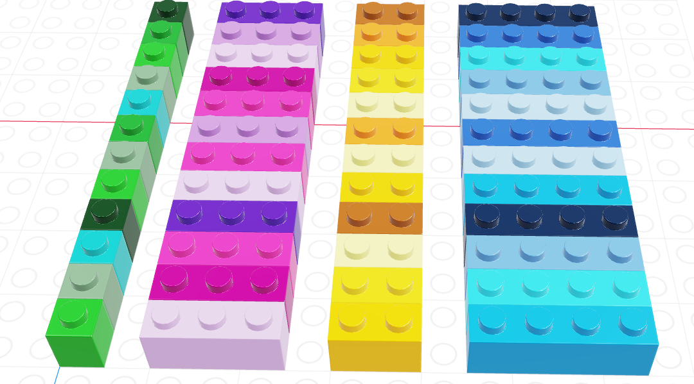
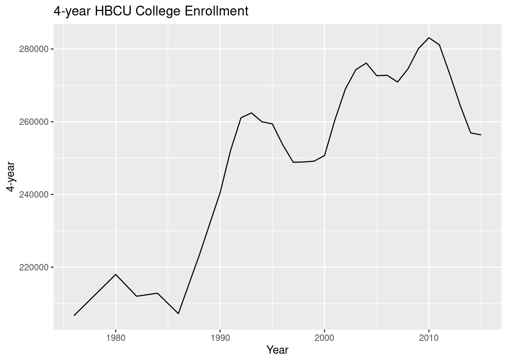
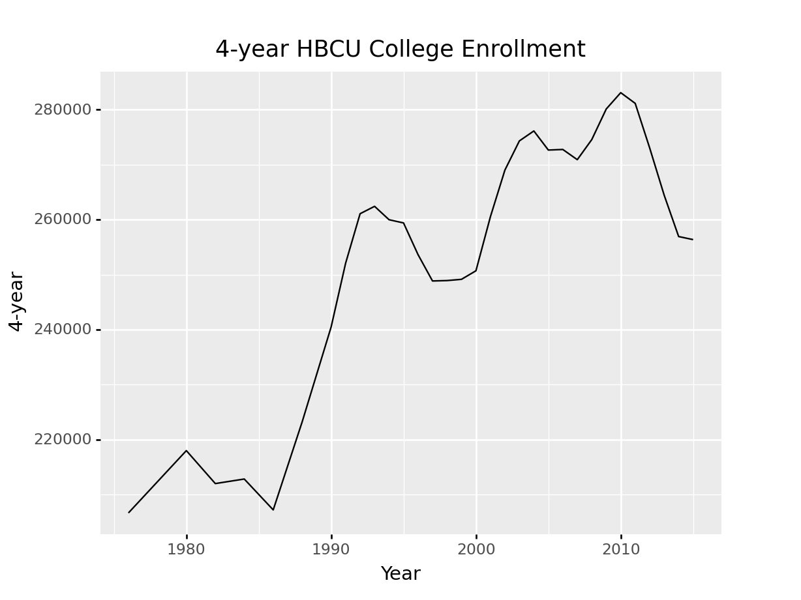
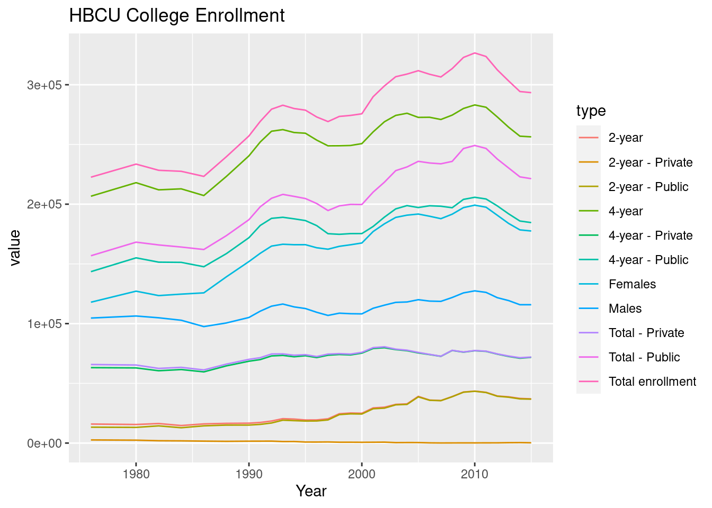
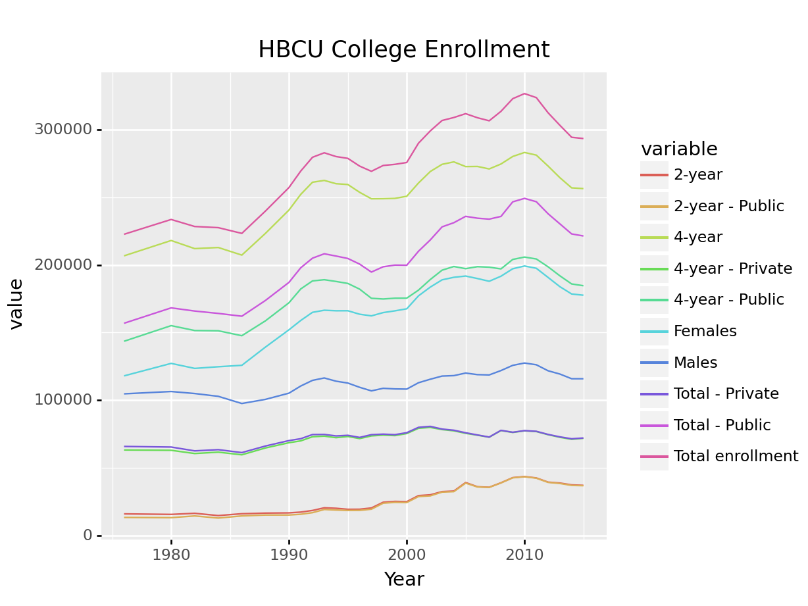

library(dplyr) # load the pipe %>%
rnorm(100) %>%
mean()
## [1] -0.02155134
rnorm(100) |> mean()
## [1] -0.025414036 Data Structures
Aside: Data Pipes
Pipes are useful items for moving things from one place to another. In data programming, pipes are operators that let us move data around. In R, we have two primary pipes that are similar (you may see both used if you google for code online). Any R version after 4.1 has a built-in pipe, |>; the tidyverse libraries use a pipe from the magrittr package, %>%.
For right now, it’s ok to think of the two pipes as essentially the same (but you can read about the differences here).
Fundamentally, a pipe allows you to take a function b() and apply it to x, like b(x), but write it as x |> b() or x %>% b(). This is particularly useful in cases where there are multiple sequential analysis steps, because where in regular notation you have to read the functions from the inside out to understand the sequential steps, with pipes, you have a clear step-by-step list of the order of operations.
In Python, there is a pipe function in the Pandas library that works using .pipe(function) notation. You can see this example for more information. From what I’ve seen reading code online, however, pipes are less commonly used in Python code than they are in R code. That’s ok - languages have different conventions, and it is usually best to adopt the convention of the language you’re working in so that your code can be read, run, and maintained by others more easily.
Use the rnorm function in R to generate 100 draws from a standard normal distribution, then use the pipe to calculate the mean.
Calculate the mean of 100 random normal variables in python.
import numpy as np
import pandas as pd
nums = pd.Series(np.random.normal(size = 100))
nums.mean()
## 0.20098298977055315The conclusion here is that it’s far easier to not use the pipe in python because the .function notation that python uses mimics the step-by-step approach of pipes in R even without using the actual pipe function. When you use data frames instead of Series, you might start using the pipe, but only in some circumstances.
6.1 Motivation: Working with Multiple Vectors
In the previous chapter, we talked about homogeneous structures: arrangements of data, like vectors and matrices, where every entry in the larger structure has the same type. In this chapter, we’ll be talking about the root of most data science analysis projects: the data frame.
Like an excel spreadsheet, data frames are arrangements of data in columns and rows.
This format has two main restrictions:
- Every entry in each column must have the same data type
- Every column must have the same number of rows

The picture above shows a data frame of 4 columns, each with a different data type (brick size/hue). The data frame has 12 rows. This picture may look similar to one that we used to show logical indexing in the last chapter, and that is not a coincidence. You can get everything from a data frame that you would get from a collection of 4 separate vectors… but there are advantages to keeping things in a data frame instead.
In the previous chapter, we learned how to make different vectors in R, numpy, and pandas. Consider for a moment https://worldpopulationreview.com/states, which lists the population of each state. You can find this dataset in CSV form here.
Multiple vectors in Python
(I’m going to cheat and read this in using pandas functions we haven’t learned yet to demonstrate why this stuff matters.)
import pandas as pd
data = pd.read_html("https://worldpopulationreview.com/states")[0]
list(data.columns) # get names
# Create a few population series
## ['Rank', 'State', '2022 Population', 'Growth 2022', '2021 Population', '2010 Census', 'Growth Since 2010', '% of US', 'Density (mi²)']
population2022 = pd.Series(data['2022 Population'].values, index = data['State'].values)
population2021 = pd.Series(data['2021 Population'].values, index = data['State'].values)
population2010 = pd.Series(data['2010 Census'].values, index = data['State'].values)Suppose that we want to sort each population vector by the population in that year.
import pandas as pd
data = pd.read_html("https://worldpopulationreview.com/states")[0]
population2022 = pd.Series(data['2022 Population'].values, index = data['State'].values).sort_values()
population2021 = pd.Series(data['2021 Population'].values, index = data['State'].values).sort_values()
population2010 = pd.Series(data['2010 Census'].values, index = data['State'].values).sort_values()
population2022.head()
## Wyoming 582233
## Vermont 622882
## District of Columbia 718355
## Alaska 720763
## North Dakota 774008
## dtype: int64
population2021.head()
## Wyoming 581075
## Vermont 623251
## District of Columbia 714153
## Alaska 724357
## North Dakota 770026
## dtype: int64
population2010.head()
## Wyoming 564487
## District of Columbia 605226
## Vermont 625879
## North Dakota 674715
## Alaska 713910
## dtype: int64The only problem is that by doing this, we’ve now lost the ordering that matched across all 3 vectors. Pandas Series are great for this, because they use labels that allow us to reconstitute which value corresponds to which label, but in R or even in numpy arrays, vectors don’t inherently come with labels. In these situations, sorting by one value can actually destroy the connection between two vectors!
Vector-based analysis in R
df <- read.csv("https://raw.githubusercontent.com/srvanderplas/Stat151/main/data/population2022.csv")
# Use vectors instead of the data frame
state <- df$State
pop2022 <- df$Pop
pop2021 <- df$Pop2021
pop2010 <- df$Pop2010
# Create a vector to index population in 2022 in order
order2022 <- order(pop2022)
# To keep variables together, we have to do things like this:
head(state[order2022])
## [1] "Wyoming" "Vermont" "District of Columbia"
## [4] "Alaska" "North Dakota" "South Dakota"
head(pop2022[order2022])
## [1] 582233 622882 718355 720763 774008 902542
# It makes more sense just to reorder the whole data frame:
head(df[order2022,])
## rank State Pop Growth Pop2021 Pop2010 growthSince2010
## 52 52 Wyoming 582233 0.0020 581075 564487 0.0314
## 51 51 Vermont 622882 -0.0006 623251 625879 -0.0048
## 50 50 District of Columbia 718355 0.0059 714153 605226 0.1869
## 49 49 Alaska 720763 -0.0050 724357 713910 0.0096
## 48 48 North Dakota 774008 0.0052 770026 674715 0.1472
## 47 47 South Dakota 902542 0.0066 896581 816166 0.1058
## Percent density
## 52 0.0017 5.9967
## 51 0.0019 67.5797
## 50 0.0021 11776.3115
## 49 0.0021 1.2631
## 48 0.0023 11.2173
## 47 0.0027 11.9052The primary advantage to data frames is that rows of data are kept together. Since we often think of a row of data as a single observation in a sample, this is an extremely important feature that makes data frames a huge improvement on a collection of vectors of the same length: it’s much harder for observations in a single row to get shuffled around and mismatched!
In R, data frames are built in as type data.frame, though there are packages that provide other implementations of data frames that have additional features, such as the tibble package used in many other common packages. We will cover functions from both base R and the tibble package in this chapter.
In Python, we will use the pandas library, which is conventionally abbreviated pd. So before you use any data frames in python, you will need to add the following line to your code: import pandas as pd.
6.2 Creating Data Frames
6.2.1 From Scratch
If you want to create a data frame “from scratch” in either R or python, the easiest way to do so is to construct a list of vectors.
Data sourced from Wikipedia’s List of Oldest dogs
Creating Data frames from scratch in R
dog_names <- c("Bluey", "Bramble", "Chanel", "Max")
dog_ages <- c(29.41, 25, 21, 29.77)
# Using the data.frame function
data <- data.frame(Name = dog_names, Age = dog_ages)
data
## Name Age
## 1 Bluey 29.41
## 2 Bramble 25.00
## 3 Chanel 21.00
## 4 Max 29.77
# Using the tibble function
library(tibble)
data <- tibble(Name = dog_names, Age = dog_ages)
# Notice the difference in how the object is printed...
data
## # A tibble: 4 × 2
## Name Age
## <chr> <dbl>
## 1 Bluey 29.4
## 2 Bramble 25
## 3 Chanel 21
## 4 Max 29.8
# Using the tribble function in the tibble package
data <- tribble(~Name, ~Age,
"Bluey", 29.41,
"Bramble", 25,
"Chanel", 21,
"Max", 29.77)
# This allows you to write out the data yourself in table format
# Column Names are indicated by putting ~ before the (bare) column name
data
## # A tibble: 4 × 2
## Name Age
## <chr> <dbl>
## 1 Bluey 29.4
## 2 Bramble 25
## 3 Chanel 21
## 4 Max 29.8Creating Data frames from scratch in python
import pandas as pd
# Create a list of lists
data = [['Bluey', 29.41],
['Bramble', 25],
['Chanel', 21],
['Max', 29.77]]
data = pd.DataFrame(data, columns = ['Name', 'Age'])
# Create a dict with lists
data = {'Name': ['Bluey', 'Bramble', 'Chanel', 'Max'],
'Age': [29.41, 25, 21, 29.77]}
data = pd.DataFrame(data)I am intentionally not discussing dictionaries (dicts) in Python at this point - my goal is to get you up and running to do data analysis in Python with as little overhead as possible. If you are interested, you can read up on dicts in Python 4 Everybody. We will hopefully find time to come back and discuss the finer points of lists, dicts, tuples, and other constructs later in the semester or in a subsequent course.
6.2.2 Reading in Data
One of the easier ways to create a data frame (rather than typing the whole thing in) is to read in data from somewhere else - a file, a table on a webpage, etc. We’re not going to go into the finer points of this (you’ll get into that in Stat 251, Data Wrangling), but it is important to at least know how to read in relatively nicely formatted data.
One nice source of (relatively neat) data is the TidyTuesday github repository1.
In Base R, we can read the data in using the read.csv function
airmen <- read.csv('https://raw.githubusercontent.com/rfordatascience/tidytuesday/master/data/2022/2022-02-08/airmen.csv')
head(airmen)
## name last_name first_name graduation_date
## 1 Adams, John H., Jr. Adams John H., Jr. 1945-04-15T00:00:00Z
## 2 Adams, Paul Adams Paul 1943-04-29T00:00:00Z
## 3 Adkins, Rutherford H. Adkins Rutherford H. 1944-10-16T00:00:00Z
## 4 Adkins, Winston A. Adkins Winston A. 1944-02-08T00:00:00Z
## 5 Alexander, Halbert L. Alexander Halbert L. 1944-11-20T00:00:00Z
## 6 Alexander, Harvey R. Alexander Harvey R. 1944-04-15T00:00:00Z
## rank_at_graduation class graduated_from pilot_type
## 1 2nd Lt SE-45-B TAAF Single engine
## 2 2nd Lt SE-43-D TAAF Single engine
## 3 2nd Lt SE-44-I-1 TAAF Single engine
## 4 2nd Lt TE-44-B TAAF Twin engine
## 5 2nd Lt SE-44-I TAAF Single engine
## 6 2nd Lt TE-44-D TAAF Twin engine
## military_hometown_of_record state aerial_victory_credits
## 1 Kansas City KS <NA>
## 2 Greenville SC <NA>
## 3 Alexandria VA <NA>
## 4 Chicago IL <NA>
## 5 Georgetown IL <NA>
## 6 Georgetown IL <NA>
## number_of_aerial_victory_credits reported_lost reported_lost_date
## 1 0 <NA> <NA>
## 2 0 <NA> <NA>
## 3 0 <NA> <NA>
## 4 0 <NA> <NA>
## 5 0 <NA> <NA>
## 6 0 <NA> <NA>
## reported_lost_location web_profile
## 1 <NA> https://cafriseabove.org/john-h-adams-jr/
## 2 <NA> https://cafriseabove.org/paul-adams/
## 3 <NA> https://cafriseabove.org/rutherford-h-adkins/
## 4 <NA> <NA>
## 5 <NA> https://cafriseabove.org/halbert-l-alexander/
## 6 <NA> https://cafriseabove.org/harvey-r-alexander/
If we want instead to create a tibble, we can use the readr package’s read_csv function, which is a bit more robust.
library(readr)
airmen <- read_csv('https://raw.githubusercontent.com/rfordatascience/tidytuesday/master/data/2022/2022-02-08/airmen.csv')
head(airmen)
## # A tibble: 6 × 16
## name last_name first_name graduation_date rank_at_graduat… class
## <chr> <chr> <chr> <dttm> <chr> <chr>
## 1 Adams, John H… Adams John H., … 1945-04-15 00:00:00 2nd Lt SE-4…
## 2 Adams, Paul Adams Paul 1943-04-29 00:00:00 2nd Lt SE-4…
## 3 Adkins, Ruthe… Adkins Rutherfor… 1944-10-16 00:00:00 2nd Lt SE-4…
## 4 Adkins, Winst… Adkins Winston A. 1944-02-08 00:00:00 2nd Lt TE-4…
## 5 Alexander, Ha… Alexander Halbert L. 1944-11-20 00:00:00 2nd Lt SE-4…
## 6 Alexander, Ha… Alexander Harvey R. 1944-04-15 00:00:00 2nd Lt TE-4…
## # … with 10 more variables: graduated_from <chr>, pilot_type <chr>,
## # military_hometown_of_record <chr>, state <chr>,
## # aerial_victory_credits <chr>, number_of_aerial_victory_credits <dbl>,
## # reported_lost <chr>, reported_lost_date <dttm>,
## # reported_lost_location <chr>, web_profile <chr>
In pandas, we can read the csv using pd.read_csv
import pandas as pd
airmen = pd.read_csv("https://raw.githubusercontent.com/rfordatascience/tidytuesday/master/data/2022/2022-02-08/airmen.csv")
airmen.head()
## name ... web_profile
## 0 Adams, John H., Jr. ... https://cafriseabove.org/john-h-adams-jr/
## 1 Adams, Paul ... https://cafriseabove.org/paul-adams/
## 2 Adkins, Rutherford H. ... https://cafriseabove.org/rutherford-h-adkins/
## 3 Adkins, Winston A. ... NaN
## 4 Alexander, Halbert L. ... https://cafriseabove.org/halbert-l-alexander/
##
## [5 rows x 16 columns]6.3 Working with Data Frames
6.3.1 Summaries (part 1)
Often, we want to know what a data frame contains. R and pandas both have easy summary methods for a data frame:
summary(airmen)
## name last_name first_name
## Length:1006 Length:1006 Length:1006
## Class :character Class :character Class :character
## Mode :character Mode :character Mode :character
##
##
##
##
## graduation_date rank_at_graduation class
## Min. :1942-03-06 00:00:00 Length:1006 Length:1006
## 1st Qu.:1943-10-22 00:00:00 Class :character Class :character
## Median :1944-05-23 00:00:00 Mode :character Mode :character
## Mean :1944-07-02 13:18:52
## 3rd Qu.:1945-04-15 00:00:00
## Max. :1948-10-12 00:00:00
## NA's :11
## graduated_from pilot_type military_hometown_of_record
## Length:1006 Length:1006 Length:1006
## Class :character Class :character Class :character
## Mode :character Mode :character Mode :character
##
##
##
##
## state aerial_victory_credits number_of_aerial_victory_credits
## Length:1006 Length:1006 Min. :0.0000
## Class :character Class :character 1st Qu.:0.0000
## Mode :character Mode :character Median :0.0000
## Mean :0.1118
## 3rd Qu.:0.0000
## Max. :4.0000
##
## reported_lost reported_lost_date reported_lost_location
## Length:1006 Min. :1943-07-02 Length:1006
## Class :character 1st Qu.:1943-07-02 Class :character
## Mode :character Median :1943-07-02 Mode :character
## Mean :1943-07-02
## 3rd Qu.:1943-07-02
## Max. :1943-07-02
## NA's :1004
## web_profile
## Length:1006
## Class :character
## Mode :character
##
##
##
##
library(skimr) # Fancier summaries
skim(airmen)| Name | airmen |
| Number of rows | 1006 |
| Number of columns | 16 |
| _______________________ | |
| Column type frequency: | |
| character | 13 |
| numeric | 1 |
| POSIXct | 2 |
| ________________________ | |
| Group variables | None |
Variable type: character
| skim_variable | n_missing | complete_rate | min | max | empty | n_unique | whitespace |
|---|---|---|---|---|---|---|---|
| name | 0 | 1.00 | 9 | 28 | 0 | 1003 | 0 |
| last_name | 0 | 1.00 | 3 | 12 | 0 | 617 | 0 |
| first_name | 0 | 1.00 | 3 | 17 | 0 | 804 | 0 |
| rank_at_graduation | 5 | 1.00 | 3 | 14 | 0 | 7 | 0 |
| class | 20 | 0.98 | 3 | 9 | 0 | 72 | 0 |
| graduated_from | 0 | 1.00 | 4 | 23 | 0 | 4 | 0 |
| pilot_type | 0 | 1.00 | 11 | 13 | 0 | 5 | 0 |
| military_hometown_of_record | 9 | 0.99 | 3 | 19 | 0 | 366 | 0 |
| state | 11 | 0.99 | 2 | 5 | 0 | 48 | 0 |
| aerial_victory_credits | 934 | 0.07 | 31 | 137 | 0 | 50 | 0 |
| reported_lost | 1004 | 0.00 | 1 | 1 | 0 | 1 | 0 |
| reported_lost_location | 1004 | 0.00 | 23 | 23 | 0 | 1 | 0 |
| web_profile | 813 | 0.19 | 34 | 95 | 0 | 190 | 0 |
Variable type: numeric
| skim_variable | n_missing | complete_rate | mean | sd | p0 | p25 | p50 | p75 | p100 | hist |
|---|---|---|---|---|---|---|---|---|---|---|
| number_of_aerial_victory_credits | 0 | 1 | 0.11 | 0.46 | 0 | 0 | 0 | 0 | 4 | ▇▁▁▁▁ |
Variable type: POSIXct
| skim_variable | n_missing | complete_rate | min | max | median | n_unique |
|---|---|---|---|---|---|---|
| graduation_date | 11 | 0.99 | 1942-03-06 | 1948-10-12 | 1944-05-23 | 52 |
| reported_lost_date | 1004 | 0.00 | 1943-07-02 | 1943-07-02 | 1943-07-02 | 1 |
Notice that the type of summary depends on the data type.
# All variables - strings are summarized with NaNs
airmen.describe(include = 'all')
# Only summarize numeric variables
## name ... web_profile
## count 1006 ... 193
## unique 1003 ... 190
## top Brothers, James E. ... https://cafriseabove.org/captain-graham-smith-...
## freq 2 ... 2
## mean NaN ... NaN
## std NaN ... NaN
## min NaN ... NaN
## 25% NaN ... NaN
## 50% NaN ... NaN
## 75% NaN ... NaN
## max NaN ... NaN
##
## [11 rows x 16 columns]
airmen.describe(include = [np.number])
# Only summarize string variables (objects)
## number_of_aerial_victory_credits
## count 1006.000000
## mean 0.111829
## std 0.457844
## min 0.000000
## 25% 0.000000
## 50% 0.000000
## 75% 0.000000
## max 4.000000
airmen.describe(include = ['O'])
# Get counts of how many NAs in each column
## name ... web_profile
## count 1006 ... 193
## unique 1003 ... 190
## top Brothers, James E. ... https://cafriseabove.org/captain-graham-smith-...
## freq 2 ... 2
##
## [4 rows x 15 columns]
airmen.info(show_counts=True)
## <class 'pandas.core.frame.DataFrame'>
## RangeIndex: 1006 entries, 0 to 1005
## Data columns (total 16 columns):
## # Column Non-Null Count Dtype
## --- ------ -------------- -----
## 0 name 1006 non-null object
## 1 last_name 1006 non-null object
## 2 first_name 1006 non-null object
## 3 graduation_date 995 non-null object
## 4 rank_at_graduation 999 non-null object
## 5 class 986 non-null object
## 6 graduated_from 1006 non-null object
## 7 pilot_type 1006 non-null object
## 8 military_hometown_of_record 997 non-null object
## 9 state 995 non-null object
## 10 aerial_victory_credits 72 non-null object
## 11 number_of_aerial_victory_credits 1006 non-null float64
## 12 reported_lost 2 non-null object
## 13 reported_lost_date 2 non-null object
## 14 reported_lost_location 2 non-null object
## 15 web_profile 193 non-null object
## dtypes: float64(1), object(15)
## memory usage: 125.9+ KBIn pandas, you will typically want to separate out .describe() calls for numeric and non-numeric columns. Another handy function in pandas is .info(), which you can use to show the number of non-NA values. This is particularly useful in sparse datasets where there may be a LOT of missing values and you may want to find out which columns have useful information for more than just a few rows.
6.3.2 Indexing
To access a subset of a data frame, we index by [row, column] in both languages (though in python we need a helper function tagged on the end of the object).
Indexing in python (lots of output)
# .iloc allows for integer location-based indexing
airmen.iloc[0:4,] # leave the space for cols blank to get all columns
## name ... web_profile
## 0 Adams, John H., Jr. ... https://cafriseabove.org/john-h-adams-jr/
## 1 Adams, Paul ... https://cafriseabove.org/paul-adams/
## 2 Adkins, Rutherford H. ... https://cafriseabove.org/rutherford-h-adkins/
## 3 Adkins, Winston A. ... NaN
##
## [4 rows x 16 columns]
airmen.iloc[0:4,[0, 3, 5]] # include a vector of column indices
# .loc allows for using the row and column indexes
## name graduation_date class
## 0 Adams, John H., Jr. 1945-04-15T00:00:00Z SE-45-B
## 1 Adams, Paul 1943-04-29T00:00:00Z SE-43-D
## 2 Adkins, Rutherford H. 1944-10-16T00:00:00Z SE-44-I-1
## 3 Adkins, Winston A. 1944-02-08T00:00:00Z TE-44-B
airmen.loc['0':'4',]
## name ... web_profile
## 0 Adams, John H., Jr. ... https://cafriseabove.org/john-h-adams-jr/
## 1 Adams, Paul ... https://cafriseabove.org/paul-adams/
## 2 Adkins, Rutherford H. ... https://cafriseabove.org/rutherford-h-adkins/
## 3 Adkins, Winston A. ... NaN
## 4 Alexander, Halbert L. ... https://cafriseabove.org/halbert-l-alexander/
## .. ... ... ...
## 395 Hicks, Frederick P. ... NaN
## 396 Higginbotham, Mitchell L. ... NaN
## 397 Highbaugh, Earl B. ... NaN
## 398 Highbaugh, Richard B. ... NaN
## 399 Hill, Charles A., Jr. ... NaN
##
## [400 rows x 16 columns]
airmen.loc[0:4,'name':'first_name'] # columns between name and first_name
## name last_name first_name
## 0 Adams, John H., Jr. Adams John H., Jr.
## 1 Adams, Paul Adams Paul
## 2 Adkins, Rutherford H. Adkins Rutherford H.
## 3 Adkins, Winston A. Adkins Winston A.
## 4 Alexander, Halbert L. Alexander Halbert L.
airmen.loc[0:4,[0,3,5]] # can't use position indexes with .loc
## Error in py_call_impl(callable, dots$args, dots$keywords): KeyError: "None of [Int64Index([0, 3, 5], dtype='int64')] are in the [columns]"
##
## Detailed traceback:
## File "<string>", line 1, in <module>
## File "/__w/Stat151/Stat151/renv/python/virtualenvs/renv-python-3.8/lib/python3.8/site-packages/pandas/core/indexing.py", line 961, in __getitem__
## return self._getitem_tuple(key)
## File "/__w/Stat151/Stat151/renv/python/virtualenvs/renv-python-3.8/lib/python3.8/site-packages/pandas/core/indexing.py", line 1149, in _getitem_tuple
## return self._getitem_tuple_same_dim(tup)
## File "/__w/Stat151/Stat151/renv/python/virtualenvs/renv-python-3.8/lib/python3.8/site-packages/pandas/core/indexing.py", line 827, in _getitem_tuple_same_dim
## retval = getattr(retval, self.name)._getitem_axis(key, axis=i)
## File "/__w/Stat151/Stat151/renv/python/virtualenvs/renv-python-3.8/lib/python3.8/site-packages/pandas/core/indexing.py", line 1191, in _getitem_axis
## return self._getitem_iterable(key, axis=axis)
## File "/__w/Stat151/Stat151/renv/python/virtualenvs/renv-python-3.8/lib/python3.8/site-packages/pandas/core/indexing.py", line 1132, in _getitem_iterable
## keyarr, indexer = self._get_listlike_indexer(key, axis)
## File "/__w/Stat151/Stat151/renv/python/virtualenvs/renv-python-3.8/lib/python3.8/site-packages/pandas/core/indexing.py", line 1327, in _get_listlike_indexer
## keyarr, indexer = ax._get_indexer_strict(key, axis_name)
## File "/__w/Stat151/Stat151/renv/python/virtualenvs/renv-python-3.8/lib/python3.8/site-packages/pandas/core/indexes/base.py", line 5782, in _get_indexer_strict
## self._raise_if_missing(keyarr, indexer, axis_name)
## File "/__w/Stat151/Stat151/renv/python/virtualenvs/renv-python-3.8/lib/python3.8/site-packages/pandas/core/indexes/base.py", line 5842, in _raise_if_missing
## raise KeyError(f"None of [{key}] are in the [{axis_name}]")This uses a function of pandas we have not previously explored: slicing. Slicing in pandas acts very similar to R’s seq method for integers, in that you can set your start and end points and use : between them. However, in python, the last index is the (non-inclusive) endpoint, so 0:3 will give you 0, 1, 2. If you want all columns after a certain index, you can use x:, where x is the starting index.
Indexing in R
airmen[1:5, ]
## # A tibble: 5 × 16
## name last_name first_name graduation_date rank_at_graduat… class
## <chr> <chr> <chr> <dttm> <chr> <chr>
## 1 Adams, John H… Adams John H., … 1945-04-15 00:00:00 2nd Lt SE-4…
## 2 Adams, Paul Adams Paul 1943-04-29 00:00:00 2nd Lt SE-4…
## 3 Adkins, Ruthe… Adkins Rutherfor… 1944-10-16 00:00:00 2nd Lt SE-4…
## 4 Adkins, Winst… Adkins Winston A. 1944-02-08 00:00:00 2nd Lt TE-4…
## 5 Alexander, Ha… Alexander Halbert L. 1944-11-20 00:00:00 2nd Lt SE-4…
## # … with 10 more variables: graduated_from <chr>, pilot_type <chr>,
## # military_hometown_of_record <chr>, state <chr>,
## # aerial_victory_credits <chr>, number_of_aerial_victory_credits <dbl>,
## # reported_lost <chr>, reported_lost_date <dttm>,
## # reported_lost_location <chr>, web_profile <chr>
airmen[1:5, c(1, 4, 6)]
## # A tibble: 5 × 3
## name graduation_date class
## <chr> <dttm> <chr>
## 1 Adams, John H., Jr. 1945-04-15 00:00:00 SE-45-B
## 2 Adams, Paul 1943-04-29 00:00:00 SE-43-D
## 3 Adkins, Rutherford H. 1944-10-16 00:00:00 SE-44-I-1
## 4 Adkins, Winston A. 1944-02-08 00:00:00 TE-44-B
## 5 Alexander, Halbert L. 1944-11-20 00:00:00 SE-44-I
airmen[1:5, c("name", "first_name")]
## # A tibble: 5 × 2
## name first_name
## <chr> <chr>
## 1 Adams, John H., Jr. John H., Jr.
## 2 Adams, Paul Paul
## 3 Adkins, Rutherford H. Rutherford H.
## 4 Adkins, Winston A. Winston A.
## 5 Alexander, Halbert L. Halbert L.In R, we can also easily pull out a single column using the $ method. Note that this gives us a vector (that is, we’ve lost the connection to the row index).
airmen$name[1:5]
## [1] "Adams, John H., Jr." "Adams, Paul" "Adkins, Rutherford H."
## [4] "Adkins, Winston A." "Alexander, Halbert L."
head(airmen["name"]) # head() just gives us the first few rows
## # A tibble: 6 × 1
## name
## <chr>
## 1 Adams, John H., Jr.
## 2 Adams, Paul
## 3 Adkins, Rutherford H.
## 4 Adkins, Winston A.
## 5 Alexander, Halbert L.
## 6 Alexander, Harvey R.In python, we can also easily pull out a single column:
airmen.name
## 0 Adams, John H., Jr.
## 1 Adams, Paul
## 2 Adkins, Rutherford H.
## 3 Adkins, Winston A.
## 4 Alexander, Halbert L.
## ...
## 1001 Young, Albert L.
## 1002 Young, Benjamin, Jr.
## 1003 Young, Eddie Lee
## 1004 Young, Lee W.
## 1005 Young, William W.
## Name: name, Length: 1006, dtype: object
airmen['name']
## 0 Adams, John H., Jr.
## 1 Adams, Paul
## 2 Adkins, Rutherford H.
## 3 Adkins, Winston A.
## 4 Alexander, Halbert L.
## ...
## 1001 Young, Albert L.
## 1002 Young, Benjamin, Jr.
## 1003 Young, Eddie Lee
## 1004 Young, Lee W.
## 1005 Young, William W.
## Name: name, Length: 1006, dtype: objectThe df.column notation, called attribute access only works in some circumstances: where the column name is not the same as a method (e.g. min) and is a valid Python identifier (so df.1 does not work). When attribute access does not work, you can still access the column by name using df['colname'] (standard indexing).
Indexing in python with pandas (Pandas documentation) This includes good information on which indexing operations are most efficient and recommended for production code.
Slicing dataframes in R - The Pirate’s Guide to R
Indexing, Slicing, and Subsetting DataFrames in Python - Visualization in Python for Ecologists
6.3.3 Row and Column Names
In both R and python, data frames have two sets of names: a set of row names, and a set of column names. In my experience, it is much more common to use column names in R and less common to actually use row names2; in Python it seems that people tend to use both sets of names frequently.
Row and Column Names in Python
Let’s start with column names. Column names can be defined by creating a Series object (remember, that’s just a fancy name for an indexed vector) and assigning it to the df.columns object, where df is the name of the data frame.
# Get index of column names
airmen.columns
# We can set the names using simple assignment
## Index(['name', 'last_name', 'first_name', 'graduation_date',
## 'rank_at_graduation', 'class', 'graduated_from', 'pilot_type',
## 'military_hometown_of_record', 'state', 'aerial_victory_credits',
## 'number_of_aerial_victory_credits', 'reported_lost',
## 'reported_lost_date', 'reported_lost_location', 'web_profile'],
## dtype='object')
airmen.columns = pd.Series(['Name', 'Last', 'First', 'Graduation_Date', 'Graduation_Rank', 'Class', 'Graduated_From', 'Pilot_Type', 'Hometown', 'State', 'Aerial_Victory_Credits', 'Num_Aerial_Victory_Credits', 'Reported_Lost', 'Reported_Lost_Date', 'Reported_Lost_Location', 'Web_Profile'])
# Now the names are capitalized
airmen.columns
## Index(['Name', 'Last', 'First', 'Graduation_Date', 'Graduation_Rank', 'Class',
## 'Graduated_From', 'Pilot_Type', 'Hometown', 'State',
## 'Aerial_Victory_Credits', 'Num_Aerial_Victory_Credits', 'Reported_Lost',
## 'Reported_Lost_Date', 'Reported_Lost_Location', 'Web_Profile'],
## dtype='object')# Get index of row names
airmen.index # this structure has numeric row names
# we can access individual rows using the numeric index (iloc)
## RangeIndex(start=0, stop=1006, step=1)
airmen.iloc[0]
# we can also access individual rows using the regular index (loc)
## Name Adams, John H., Jr.
## Last Adams
## First John H., Jr.
## Graduation_Date 1945-04-15T00:00:00Z
## Graduation_Rank 2nd Lt
## Class SE-45-B
## Graduated_From TAAF
## Pilot_Type Single engine
## Hometown Kansas City
## State KS
## Aerial_Victory_Credits NaN
## Num_Aerial_Victory_Credits 0.0
## Reported_Lost NaN
## Reported_Lost_Date NaN
## Reported_Lost_Location NaN
## Web_Profile https://cafriseabove.org/john-h-adams-jr/
## Name: 0, dtype: object
airmen.loc[0]
# this doesn't work because the row names are integers
## Name Adams, John H., Jr.
## Last Adams
## First John H., Jr.
## Graduation_Date 1945-04-15T00:00:00Z
## Graduation_Rank 2nd Lt
## Class SE-45-B
## Graduated_From TAAF
## Pilot_Type Single engine
## Hometown Kansas City
## State KS
## Aerial_Victory_Credits NaN
## Num_Aerial_Victory_Credits 0.0
## Reported_Lost NaN
## Reported_Lost_Date NaN
## Reported_Lost_Location NaN
## Web_Profile https://cafriseabove.org/john-h-adams-jr/
## Name: 0, dtype: object
airmen.loc['Adams, John H., Jr.']
# We can set row names using simple assignment
## Error in py_call_impl(callable, dots$args, dots$keywords): KeyError: 'Adams, John H., Jr.'
##
## Detailed traceback:
## File "<string>", line 1, in <module>
## File "/__w/Stat151/Stat151/renv/python/virtualenvs/renv-python-3.8/lib/python3.8/site-packages/pandas/core/indexing.py", line 967, in __getitem__
## return self._getitem_axis(maybe_callable, axis=axis)
## File "/__w/Stat151/Stat151/renv/python/virtualenvs/renv-python-3.8/lib/python3.8/site-packages/pandas/core/indexing.py", line 1202, in _getitem_axis
## return self._get_label(key, axis=axis)
## File "/__w/Stat151/Stat151/renv/python/virtualenvs/renv-python-3.8/lib/python3.8/site-packages/pandas/core/indexing.py", line 1153, in _get_label
## return self.obj.xs(label, axis=axis)
## File "/__w/Stat151/Stat151/renv/python/virtualenvs/renv-python-3.8/lib/python3.8/site-packages/pandas/core/generic.py", line 3876, in xs
## loc = index.get_loc(key)
## File "/__w/Stat151/Stat151/renv/python/virtualenvs/renv-python-3.8/lib/python3.8/site-packages/pandas/core/indexes/range.py", line 389, in get_loc
## raise KeyError(key)
airmen.index = airmen.name
# Row names are changed
## Error in py_call_impl(callable, dots$args, dots$keywords): AttributeError: 'DataFrame' object has no attribute 'name'
##
## Detailed traceback:
## File "<string>", line 1, in <module>
## File "/__w/Stat151/Stat151/renv/python/virtualenvs/renv-python-3.8/lib/python3.8/site-packages/pandas/core/generic.py", line 5583, in __getattr__
## return object.__getattribute__(self, name)
airmen.index # now the row name index is a string and we can look names up this way
# we can still access individual rows using the numeric index (iloc)
## RangeIndex(start=0, stop=1006, step=1)
airmen.iloc[0]
# we can mo longer access individual rows using the regular index (loc)
# with a numeric value
## Name Adams, John H., Jr.
## Last Adams
## First John H., Jr.
## Graduation_Date 1945-04-15T00:00:00Z
## Graduation_Rank 2nd Lt
## Class SE-45-B
## Graduated_From TAAF
## Pilot_Type Single engine
## Hometown Kansas City
## State KS
## Aerial_Victory_Credits NaN
## Num_Aerial_Victory_Credits 0.0
## Reported_Lost NaN
## Reported_Lost_Date NaN
## Reported_Lost_Location NaN
## Web_Profile https://cafriseabove.org/john-h-adams-jr/
## Name: 0, dtype: object
airmen.loc[0]
# but because we set the row names to be the individuals actual names,
# we can use those in the .loc statement
## Name Adams, John H., Jr.
## Last Adams
## First John H., Jr.
## Graduation_Date 1945-04-15T00:00:00Z
## Graduation_Rank 2nd Lt
## Class SE-45-B
## Graduated_From TAAF
## Pilot_Type Single engine
## Hometown Kansas City
## State KS
## Aerial_Victory_Credits NaN
## Num_Aerial_Victory_Credits 0.0
## Reported_Lost NaN
## Reported_Lost_Date NaN
## Reported_Lost_Location NaN
## Web_Profile https://cafriseabove.org/john-h-adams-jr/
## Name: 0, dtype: object
airmen.loc['Adams, John H., Jr.']
## Error in py_call_impl(callable, dots$args, dots$keywords): KeyError: 'Adams, John H., Jr.'
##
## Detailed traceback:
## File "<string>", line 1, in <module>
## File "/__w/Stat151/Stat151/renv/python/virtualenvs/renv-python-3.8/lib/python3.8/site-packages/pandas/core/indexing.py", line 967, in __getitem__
## return self._getitem_axis(maybe_callable, axis=axis)
## File "/__w/Stat151/Stat151/renv/python/virtualenvs/renv-python-3.8/lib/python3.8/site-packages/pandas/core/indexing.py", line 1202, in _getitem_axis
## return self._get_label(key, axis=axis)
## File "/__w/Stat151/Stat151/renv/python/virtualenvs/renv-python-3.8/lib/python3.8/site-packages/pandas/core/indexing.py", line 1153, in _get_label
## return self.obj.xs(label, axis=axis)
## File "/__w/Stat151/Stat151/renv/python/virtualenvs/renv-python-3.8/lib/python3.8/site-packages/pandas/core/generic.py", line 3876, in xs
## loc = index.get_loc(key)
## File "/__w/Stat151/Stat151/renv/python/virtualenvs/renv-python-3.8/lib/python3.8/site-packages/pandas/core/indexes/range.py", line 389, in get_loc
## raise KeyError(key)When we select certain rows using the row names, we typically refer to the row names as the key.
Read more about database keys here if you are interested. This is material that we will cover in Stat 351, but it may be useful for you now if you are interested in learning to program more efficiently from the start.
Row and Column Names in R
In R, column and row names are just normal vectors - no special data types here!
names(airmen)
## [1] "name" "last_name"
## [3] "first_name" "graduation_date"
## [5] "rank_at_graduation" "class"
## [7] "graduated_from" "pilot_type"
## [9] "military_hometown_of_record" "state"
## [11] "aerial_victory_credits" "number_of_aerial_victory_credits"
## [13] "reported_lost" "reported_lost_date"
## [15] "reported_lost_location" "web_profile"
# Set new column names
names(airmen) <- c('Name', 'Last', 'First', 'Graduation_Date', 'Graduation_Rank', 'Class', 'Graduated_From', 'Pilot_Type', 'Hometown', 'State', 'Aerial_Victory_Credits', 'Num_Aerial_Victory_Credits', 'Reported_Lost', 'Reported_Lost_Date', 'Reported_Lost_Location', 'Web_Profile')
# Using new names
airmen$Name[1:5]
## [1] "Adams, John H., Jr." "Adams, Paul" "Adkins, Rutherford H."
## [4] "Adkins, Winston A." "Alexander, Halbert L."If we want to set row names in R, we can try the obvious approach: ::: {.cell}
rownames(airmen) <- airmen$Name
## Warning: Setting row names on a tibble is deprecated.
## Warning: non-unique values when setting 'row.names': 'Brothers, James E.',
## 'Walker, William H.', 'Watkins, Edward W.'
## Error in `.rowNamesDF<-`(x, value = value): duplicate 'row.names' are not allowed:::
But this runs into trouble, since we have some duplicate names. We can see which names are duplicates by using the table command combined with sort and head to truncate the output. I’m going to use the pipe command, |>, to separate these steps. This is equivalent to head(sort(table(airmen$Name), decreasing = T)) but is much easier to read since it can be read as a “recipe” of steps.
table(airmen$Name) |>
sort(decreasing = T) |>
head()
##
## Brothers, James E. Walker, William H. Watkins, Edward W.
## 2 2 2
## Adams, John H., Jr. Adams, Paul Adkins, Rutherford H.
## 1 1 1R requires rownames to be unique, so we are better off with some other identifier that we don’t have here (SSN, military ID number, etc.) that is guaranteed to be unique. Since we don’t have that kind of information, we really don’t get any advantage by setting the rownames in R.
6.3.4 Creating New Columns
In both Python and R, it is very easy to add new (derived) columns to a data frame, using methods similar to how you access data from a pre-existing column:
airmen$initials <- paste0(substr(airmen$First, 1, 1), substr(airmen$Last, 1, 1))
head(airmen$initials)
## [1] "JA" "PA" "RA" "WA" "HA" "HA"airmen['initials'] = airmen['First'].str.slice(0,1) + airmen['Last'].str.slice(0,1)
airmen['initials'][0:7]
## 0 JA
## 1 PA
## 2 RA
## 3 WA
## 4 HA
## 5 HA
## 6 RA
## Name: initials, dtype: objectAnother way to create new variables in R involves the use of the dplyr package. There are at least 2 advantages to using this package for these types of tasks:
- There is a consistent way to call each function and engage with the data (this API - application programming interface - is designed around using the pipe,
%>%discussed above) - You don’t have to reference the data frame name and the column name using
df$colname; instead, you use the function on the data frame and work with “bare” column names inside that function.
library(dplyr)
airmen <- airmen %>%
mutate(initials = paste0(substr(First, 1, 1), substr(Last, 1, 1)))
select(airmen, 1:3, initials) # Select lets us choose to only show some columns
## # A tibble: 1,006 × 4
## Name Last First initials
## <chr> <chr> <chr> <chr>
## 1 Adams, John H., Jr. Adams John H., Jr. JA
## 2 Adams, Paul Adams Paul PA
## 3 Adkins, Rutherford H. Adkins Rutherford H. RA
## 4 Adkins, Winston A. Adkins Winston A. WA
## 5 Alexander, Halbert L. Alexander Halbert L. HA
## 6 Alexander, Harvey R. Alexander Harvey R. HA
## 7 Alexander, Robert R. Alexander Robert R. RA
## 8 Alexander, Walter G., III Alexander Walter G., III WA
## 9 Allen, Carl V. Allen Carl V. CA
## 10 Allen, Clarence W. Allen Clarence W. CA
## # … with 996 more rowsNotice that by running mutate on the data frame, we automatically get a tibble back.
You can do a similar trick with the .assign function in pandas, but unlike in R, you still have to reference the dataframe object within the .assign function.
airmen.assign(
initials = airmen['First'].str.slice(0,1) + airmen['Last'].str.slice(0,1)
)
## Name ... initials
## 0 Adams, John H., Jr. ... JA
## 1 Adams, Paul ... PA
## 2 Adkins, Rutherford H. ... RA
## 3 Adkins, Winston A. ... WA
## 4 Alexander, Halbert L. ... HA
## ... ... ... ...
## 1001 Young, Albert L. ... AY
## 1002 Young, Benjamin, Jr. ... BY
## 1003 Young, Eddie Lee ... EY
## 1004 Young, Lee W. ... LY
## 1005 Young, William W. ... WY
##
## [1006 rows x 17 columns]6.3.5 Subsets of Rows
Another major operation commonly performed on data frames is to choose only a certain set of rows, either randomly or using a logical condition.
In base R, we would use the subset() function:
subset(airmen, Last == "Young")
## # A tibble: 5 × 17
## Name Last First Graduation_Date Graduation_Rank Class Graduated_From
## <chr> <chr> <chr> <dttm> <chr> <chr> <chr>
## 1 Young, A… Young Albe… 1944-03-12 00:00:00 2nd Lt SE-4… TAAF
## 2 Young, B… Young Benj… 1945-05-23 00:00:00 2nd Lt SE-4… TAAF
## 3 Young, E… Young Eddi… 1946-05-14 00:00:00 Flight Officer SE-4… TAAF
## 4 Young, L… Young Lee … 1945-06-27 00:00:00 Flight Officer SE-4… TAAF
## 5 Young, W… Young Will… 1945-09-08 00:00:00 2nd Lt SE-4… TAAF
## # … with 10 more variables: Pilot_Type <chr>, Hometown <chr>, State <chr>,
## # Aerial_Victory_Credits <chr>, Num_Aerial_Victory_Credits <dbl>,
## # Reported_Lost <chr>, Reported_Lost_Date <dttm>,
## # Reported_Lost_Location <chr>, Web_Profile <chr>, initials <chr>
In python, we use the .query() function:
airmen.query('Last == "Young"')
## Name ... initials
## 1001 Young, Albert L. ... AY
## 1002 Young, Benjamin, Jr. ... BY
## 1003 Young, Eddie Lee ... EY
## 1004 Young, Lee W. ... LY
## 1005 Young, William W. ... WY
##
## [5 rows x 17 columns]
In dplyr, we use the filter function:
airmen %>%
filter(Last == "Young")
## # A tibble: 5 × 17
## Name Last First Graduation_Date Graduation_Rank Class Graduated_From
## <chr> <chr> <chr> <dttm> <chr> <chr> <chr>
## 1 Young, A… Young Albe… 1944-03-12 00:00:00 2nd Lt SE-4… TAAF
## 2 Young, B… Young Benj… 1945-05-23 00:00:00 2nd Lt SE-4… TAAF
## 3 Young, E… Young Eddi… 1946-05-14 00:00:00 Flight Officer SE-4… TAAF
## 4 Young, L… Young Lee … 1945-06-27 00:00:00 Flight Officer SE-4… TAAF
## 5 Young, W… Young Will… 1945-09-08 00:00:00 2nd Lt SE-4… TAAF
## # … with 10 more variables: Pilot_Type <chr>, Hometown <chr>, State <chr>,
## # Aerial_Victory_Credits <chr>, Num_Aerial_Victory_Credits <dbl>,
## # Reported_Lost <chr>, Reported_Lost_Date <dttm>,
## # Reported_Lost_Location <chr>, Web_Profile <chr>, initials <chr>We can also sample from a data frame. This can be useful when working with a large dataset, or when simulating to determine how a method performs on some data.
For simplicity, I’m going to primarily show you the dplyr and pandas equivalents - it is possible to do this in base R, but it’s much easier to do in dplyr.
Sampling in R
airmen %>% sample_frac(.01)
## # A tibble: 10 × 17
## Name Last First Graduation_Date Graduation_Rank Class Graduated_From
## <chr> <chr> <chr> <dttm> <chr> <chr> <chr>
## 1 Connell… Conn… Vict… 1945-06-27 00:00:00 2nd Lt SE-4… TAAF
## 2 Burke, … Burke Vern… 1948-10-12 00:00:00 2nd Lt <NA> Williams AFB,…
## 3 Hudson,… Huds… Elbe… 1944-03-12 00:00:00 2nd Lt SE-4… TAAF
## 4 Hudson,… Huds… Linc… 1944-06-27 00:00:00 2nd Lt SE-4… TAAF
## 5 William… Will… Euge… 1945-08-04 00:00:00 2nd Lt SE-4… TAAF
## 6 Lee, Fr… Lee Frank 1944-06-27 00:00:00 2nd Lt TE-4… TAAF
## 7 Dillon,… Dill… Oliv… 1946-01-29 00:00:00 2nd Lt TE-4… TAAF
## 8 Lawrenc… Lawr… Erwi… 1942-07-03 00:00:00 2nd Lt SE-4… TAAF
## 9 Chamber… Cham… Char… 1946-03-23 00:00:00 2nd Lt SE-4… TAAF
## 10 Adams, … Adams John… 1945-04-15 00:00:00 2nd Lt SE-4… TAAF
## # … with 10 more variables: Pilot_Type <chr>, Hometown <chr>, State <chr>,
## # Aerial_Victory_Credits <chr>, Num_Aerial_Victory_Credits <dbl>,
## # Reported_Lost <chr>, Reported_Lost_Date <dttm>,
## # Reported_Lost_Location <chr>, Web_Profile <chr>, initials <chr>
airmen %>% sample_n(5)
## # A tibble: 5 × 17
## Name Last First Graduation_Date Graduation_Rank Class Graduated_From
## <chr> <chr> <chr> <dttm> <chr> <chr> <chr>
## 1 Gaines, … Gain… Thur… 1944-08-04 00:00:00 Flight Officer SE-4… TAAF
## 2 Maxwell,… Maxw… Robe… 1945-09-08 00:00:00 2nd Lt TE-4… TAAF
## 3 Crockett… Croc… Wood… 1943-03-25 00:00:00 2nd Lt SE-4… TAAF
## 4 Moody, F… Moody Fran… 1944-02-08 00:00:00 2nd Lt SE-4… TAAF
## 5 Holbert,… Holb… Bert… 1945-03-11 00:00:00 2nd Lt SE-4… TAAF
## # … with 10 more variables: Pilot_Type <chr>, Hometown <chr>, State <chr>,
## # Aerial_Victory_Credits <chr>, Num_Aerial_Victory_Credits <dbl>,
## # Reported_Lost <chr>, Reported_Lost_Date <dttm>,
## # Reported_Lost_Location <chr>, Web_Profile <chr>, initials <chr>Sampling rows is similarly easy in python:
airmen.sample(frac=.01)
## Name ... initials
## 59 Bohannon, Horace A. ... HB
## 34 Barnes, Gentry E. ... GB
## 488 Keel, Daniel ... DK
## 651 Norton, George G., Jr. ... GN
## 898 Watkins, Edward W. ... EW
## 692 Porter, Robert B. ... RP
## 120 Cain, William L. ... WC
## 721 Reed, Marsille P. ... MR
## 665 Pasquet, Alex ... AP
## 745 Robinson, Robert L., Jr. ... RR
##
## [10 rows x 17 columns]
airmen.sample(n = 5)
## Name ... initials
## 732 Roach, Charles J. ... CR
## 103 Bruce, Reginald ... RB
## 390 Herrington, Arron ... AH
## 637 Myers, Charles P. ... CM
## 185 Craigwell, Ernest ... EC
##
## [5 rows x 17 columns]6.3.6 Summaries (part 2)
Using subsets of rows and columns, we can also create summaries of data frames that are more customized to what we want. This is particularly powerful when we combine it with material we learned in the previous chapter: for loops.
There are more efficient ways to generate summaries than what I will show you here, but it’s important to see how for loops might apply to this use case before we talk about ways to do this using e.g. the dplyr package in R. This will help you understand what those more efficient functions are doing “under the hood”.
If we want to create a data frame that has one row for each unique value of a variable in our source data, we can iterate through the data taking subsets and creating a set of summary variables that are customized to our problem.
Suppose we want to take the airmen data and calculate the total number of aerial victory credits from each state.
We start out with the following game plan:
Create an empty summary dataset. We plan for the result to have one row for each state.
Iterate through the states in the dataset
For each state, subset the data within the loop to get only values from that state
Calculate the total number of aerial victory credits
Add a row to the summary dataset with the values from the state
Exit the loop
We want to check and make sure that the reported aerial victory credit count is what we’re expecting:
table(airmen$Num_Aerial_Victory_Credits, useNA = 'ifany')
##
## 0 1 1.5 2 3 4
## 934 43 1 19 6 3airmen['Num_Aerial_Victory_Credits'].value_counts()
## 0.0 934
## 1.0 43
## 2.0 19
## 3.0 6
## 4.0 3
## 1.5 1
## Name: Num_Aerial_Victory_Credits, dtype: int64Creating a summary dataset in R with a loop
# Create an empty data frame to store the results
state_victories <- data.frame(State = NULL, total_victory_credits = NULL)
for (i in unique(airmen$State)) {
# Get a subset of the data with only airmen from the selected state
state_sub <- filter(airmen, State == i)
victory_credits <- sum(state_sub$Num_Aerial_Victory_Credits)
# Append our row for this state onto the summary data frame
state_victories <- rbind(
state_victories,
data.frame(State = i, total_victory_credits = victory_credits)
)
}
state_victories %>%
arrange(desc(total_victory_credits)) # Sort in descending order
## State total_victory_credits
## 1 NY 14.0
## 2 CA 12.0
## 3 IL 10.0
## 4 MO 10.0
## 5 VA 6.5
## 6 OH 6.0
## 7 KS 5.0
## 8 PA 4.0
## 9 IA 4.0
## 10 GA 4.0
## 11 OK 4.0
## 12 NJ 3.0
## 13 AL 3.0
## 14 IN 3.0
## 15 TX 3.0
## 16 OR 3.0
## 17 WA 3.0
## 18 WV 2.0
## 19 FL 2.0
## 20 TN 2.0
## 21 WI 2.0
## 22 SC 1.0
## 23 MD 1.0
## 24 NC 1.0
## 25 MA 1.0
## 26 CT 1.0
## 27 DC 1.0
## 28 NE 1.0
## 29 In 0.0
## 30 RI 0.0
## 31 Haiti 0.0
## 32 <NA> 0.0
## 33 MI 0.0
## 34 LA 0.0
## 35 CO 0.0
## 36 MS 0.0
## 37 MN 0.0
## 38 AZ 0.0
## 39 AR 0.0
## 40 KY 0.0
## 41 HT 0.0
## 42 VT 0.0
## 43 CN 0.0
## 44 VI 0.0
## 45 DE 0.0
## 46 KN 0.0
## 47 TD 0.0
## 48 Unk 0.0
## 49 WY 0.0Creating a summary dataset in python with a loop
# Create an empty data frame to store the results
state_victories = pd.DataFrame(columns = ['state', 'total_victory_credits'])
for i in airmen.State.unique():
# Get a subset of the data with only airmen from the selected state
state_sub = airmen.loc[airmen.State == i]
victory_credits = state_sub['Num_Aerial_Victory_Credits'].sum()
state_victories.loc[i] = [i, victory_credits]
state_victories. \
sort_values(["total_victory_credits"], ascending = False). \
iloc[1:10,]
# Putting slashes at the end of the line here allows me to separate
# the operations into steps, rather like using a pipe in R
# It only works if nothing is after the \ though, so
# I have to put the comment below the code instead of inline
## state total_victory_credits
## CA CA 12.0
## IL IL 10.0
## MO MO 10.0
## VA VA 6.5
## OH OH 6.0
## KS KS 5.0
## GA GA 4.0
## IA IA 4.0
## OK OK 4.0Writing this code from scratch, not knowing Python that well, required the following google queries and pages:
python summary table: https://pbpython.com/sidetable.html (I didn’t use sidetable, but I did use the pandas code here that shows how to use
.value_counts())create an empty pandas dataframe: Query result. I used Method 3.
unique values in python: Query result (not helpful). This worked for numpy but not for pandas series/dataframe columns.
pandas column unique values: Query result (helpful)
pandas sort decreasing: Query result
Because I outlined my steps above, though, I could figure out pretty easily how to google for exactly what I needed at each step. Writing out the steps ahead of time, and knowing how to work using data frames and row-by-row operations helps with googling solutions that work!
6.3.7 Try it (all) Out!
Let’s look at a dataset of dog breed rankings (1 = low, 5 = high) for different traits. We can read in this data using the following code:
breed_traits <- read.csv('https://raw.githubusercontent.com/rfordatascience/tidytuesday/master/data/2022/2022-02-01/breed_traits.csv')breed_traits = pd.read_csv('https://raw.githubusercontent.com/rfordatascience/tidytuesday/master/data/2022/2022-02-01/breed_traits.csv')Can you complete the following tasks?
Pull out any dogs that have “Terrier” in the name. Hint: Testing with strings in python, Using
grepandgreplin RCreate a data frame of all dogs who are 4 or 5 on “Affectionate with Family” and name it good_with_family. Make sure you keep all of the columns in the original data frame.
Create a data frame with all variables relating to coat (shedding level, coat type, coat length, grooming frequency) as well as the dog breed. Make sure you keep all rows, but only include the necessary columns.
Draw a random sample of 10 dogs from your dataset.
Create a new variable, named mess, that is the product of the dog’s shedding level and their drooling level. (It’s probably a bad idea to multiply categorical variables, but in this case we’re going to go with it.) Summarize this numeric variable.
Solutions (R)
library(dplyr) # data frame manipulations
library(stringr) # string comparison functions in tidyverse
# 1: Terriers
terrorists <- breed_traits[grepl("Terrier", breed_traits$Breed),]
terrorists2 <- breed_traits %>%
filter(str_detect(Breed, "Terrier"))
# 2: Good with Family
good_with_family <- breed_traits[breed_traits$Affectionate.With.Family > 3,]
good_with_family2 <- breed_traits %>%
filter(Affectionate.With.Family > 3)
# 3: Coat variables
coat <- breed_traits[,c(1, 4:5, 7:8)] # count column by column
coat2 <- breed_traits %>%
select(Breed, matches(c("Coat", "Grooming", "Shedding"))) # tidy way
coat3 <- breed_traits[,grepl("Coat|Grooming|Shedding|Breed", names(breed_traits))] # match string names
# 4: random sample of 10 dogs
sample_dogs <- breed_traits[sample(1:nrow(breed_traits), 10),] # base R way
sample_dogs2 <- breed_traits %>% sample_n(10) # tidy way
# 5: mess
breed_traits$mess <- breed_traits$Drooling.Level * breed_traits$Shedding.Level
breed_traits <- breed_traits %>%
mutate(mess2 = Drooling.Level*Shedding.Level)
summary(breed_traits$mess)
## Min. 1st Qu. Median Mean 3rd Qu. Max.
## 0.000 2.000 3.000 4.841 6.000 20.000
breed_traits %>% select(mess2) %>% summary()
## mess2
## Min. : 0.000
## 1st Qu.: 2.000
## Median : 3.000
## Mean : 4.841
## 3rd Qu.: 6.000
## Max. :20.000Solutions (python)
# 1: Terriers
terrorists = breed_traits.loc[breed_traits.Breed.str.match(r".*Terrier.*"),]
# 2: Good with Family
good_with_family = breed_traits.query("`Affectionate With Family` > 3")
good_with_family['Affectionate With Family'].min() # just checking
# 3: Coat variables
## 4
coat = breed_traits.loc[:,["Breed", "Shedding Level", "Coat Grooming Frequency", "Coat Type", "Coat Length"]]
coat2 = breed_traits.iloc[:,breed_traits.columns.str.match(r"Breed|Coat|Shedding")]
# 4: random sample of 10 dogs
sample_dogs = breed_traits.sample(n = 10)
# 5: mess
breed_traits['mess'] = breed_traits['Drooling Level'] * breed_traits['Shedding Level']
breed_traits.mess.describe
## <bound method NDFrame.describe of 0 8
## 1 9
## 2 8
## 3 8
## 4 9
## ..
## 190 2
## 191 3
## 192 2
## 193 6
## 194 3
## Name: mess, Length: 195, dtype: int64>
breed_traits.mess.min()
## 0
breed_traits.mess.max()
## 206.4 Basic Plotting Examples
Now that you can read data in to R and python and define new variables, you can create plots! We’ll focus a bit more on this later in the class, but for now, I’d like to take a few minutes to explain how to make (basic) plots in R (with ggplot2) and in python (with plotnine, which is a ggplot2 clone).
Let’s work with Historically Black College and University enrollment in this example:
hbcu_all <- readr::read_csv('https://raw.githubusercontent.com/rfordatascience/tidytuesday/master/data/2021/2021-02-02/hbcu_all.csv')
library(ggplot2)import pandas as pd
from plotnine import *
hbcu_all = pd.read_csv('https://raw.githubusercontent.com/rfordatascience/tidytuesday/master/data/2021/2021-02-02/hbcu_all.csv')ggplot2 and plotnine work with data frames. If you pass a data frame in as the data argument, you can refer to columns in that data with “bare” column names (you don’t have to reference the full data object using df$name or df.name; you can instead use name or "name"):
ggplot(hbcu_all, aes(x = Year, y = `4-year`)) + geom_line() +
ggtitle("4-year HBCU College Enrollment")
ggplot(hbcu_all, aes(x = "Year", y = "4-year")) + geom_line() + \
ggtitle("4-year HBCU College Enrollment")
## <ggplot: (8742926189090)>
If your data is in the right format, ggplot2 is very easy to use; if your data aren’t formatted neatly, it can be a real pain. If you want to plot multiple lines, you need to either list each variable you want to plot, one by one, or (more likely) you want to get your data into “long form”. You don’t need to know exactly how this works, but it is helpful to see the difference in the two datasets:
library(tidyr)
hbcu_long <- pivot_longer(hbcu_all, -Year, names_to = "type", values_to = "value")
head(hbcu_all)
## # A tibble: 6 × 12
## Year `Total enrollment` Males Females `4-year` `2-year` `Total - Public`
## <dbl> <dbl> <dbl> <dbl> <dbl> <dbl> <dbl>
## 1 1976 222613 104669 117944 206676 15937 156836
## 2 1980 233557 106387 127170 218009 15548 168217
## 3 1982 228371 104897 123474 212017 16354 165871
## 4 1984 227519 102823 124696 212844 14675 164116
## 5 1986 223275 97523 125752 207231 16044 162048
## 6 1988 239755 100561 139194 223250 16505 173672
## # … with 5 more variables: `4-year - Public` <dbl>, `2-year - Public` <dbl>,
## # `Total - Private` <dbl>, `4-year - Private` <dbl>, `2-year - Private` <dbl>
head(hbcu_long)
## # A tibble: 6 × 3
## Year type value
## <dbl> <chr> <dbl>
## 1 1976 Total enrollment 222613
## 2 1976 Males 104669
## 3 1976 Females 117944
## 4 1976 4-year 206676
## 5 1976 2-year 15937
## 6 1976 Total - Public 156836hbcu_long = pd.melt(hbcu_all, id_vars = ['Year'], value_vars = hbcu_all.columns[1:11])In the long form of the data, we have a row for each data point (year x measurement type), not for each year.
ggplot(hbcu_long, aes(x = Year, y = value, color = type)) + geom_line() +
ggtitle("HBCU College Enrollment")
ggplot(hbcu_long, aes(x = "Year", y = "value", color = "variable")) + geom_line() + \
ggtitle("HBCU College Enrollment") + \
theme(subplots_adjust={'right':0.75}) # This moves the key so it takes up 25% of the area
## <ggplot: (8742945498269)>
Footnotes
Tidy Tuesday is a collaborative project where the R community gets together and explores a dataset, cleaning it, visualizing it, and generally working to collectively hone R skills together. You can find some very nice YouTube livestreams, as well as lots of examples using the #tidytuesday twitter tag.↩︎
More advanced data-frame like structures, such as
tibbles, actively discourage the use of row names.↩︎